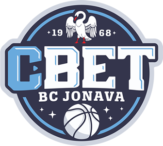

Jonavos „CBet“

Įkurtas:
1999 metais
Vyriausias treneris:
Virginijus Šeškus
Komandos sudėtis:
- #0 Kahlil Thomas
- #1 Justinas Ramanauskas
- #3 Juan Palacios
- #5 Evaldas Šaulys
- #7 Laimonas Kisielius
- #8 Nedas Rauluševičius
- #9 Edvinas Šeškus
- #10 Vitalijus Kozys
- #13 Astijus Ivanovas
- #18 Matas Masiliūnas
- #20 Emmanuel Lecomte
- #21 Lachlan Anderson
- #27 Tomas Zdanavičius
Nuoroda į oficialią svetainę >>>
<<< Grįžti į pagrindinį puslapį